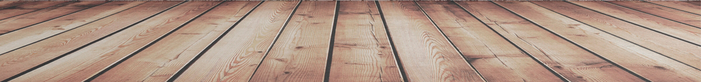

Info
Kort info
Mit navn er Julie Bagerskov.
Jeg bor på Amager og kommer oprindeligt fra Roskilde.
Jeg har altid syntes, det var sjovt at udfordre mine kreative kompetencer. Jeg har f.eks. brugt en del af min fritid på videoklipning af bl.a. polterarbender, hvor jeg fik tilsendt nogle videoer og billeder fra gæsterne.
Derudover bruger jeg også en del tid på at tage billeder selv og redigere dem i bl.a. Photoshop.
Uddannelse
Jeg er igang med at studere multimediedesign på Cph Business i Lyngby, hvor jeg er ved at være færdig med første semester.
Jeg startede på denne uddannelse, da jeg gerne vil udvide min viden og kompetencer indenfor faget. Jeg valgte lige netop denne skole, da de tilbyder et meget bredt udvalg af undervisningsstof indenfor mediedesign.
Jeg har altid været mere hen af det kreative, så derfor finder jeg kodning som en forfriskende udfordring. Jeg ser frem til at lære en hel masse mere om HTML, CSS og grafisk design.
Jobs
Jeg arbejdede fuldtid for Gogift.com i min studiepause.
Her arbejdede jeg i logistikafdelingen, hvor jeg havde ansvaret for finsk og norsk b2b, b2c og reedem forsendelser.
Her var jeg det bindende led mellem det finske og det norske kundeserviceafdelinger og logistikafdelingen.
Jeg er sat fastansat i Gogift i dag, blot som studiejob.
